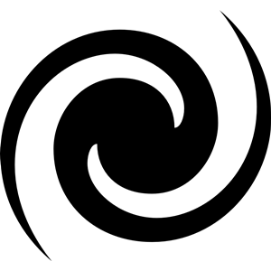

Toggle navigation
Spiral Creator
Simulation
Explanations
About

About the project
Goals of the Spiral Creator
Technology used
The animation is coded in Javascript and WebGL, using the 3D library
ThreeJS
.